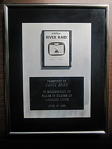

Algumas fotos de sua historia



Nascida na Califórnia (Estados Unidos) em 1955, Shaw sempre esteve na região do Vale do Silício e, naturalmente, foi influenciada pela revolução tecnológica que ali aconteceu. Seu interesse pelos videogames começou cedo, quando a jovem Carol costumava frequentar o minigolfe de sua região, onde havia uma sala com jogos de arcades.
Shaw em 1983, com um prêmio por meio milhão de cartuchos vendidos.
Shaw é a primeira mulher a trabalhar na indústria de games, sendo uma das principais pioneiras para a igualdade de gêneros nesse segmento. Primeiro, a desenvolvedora trabalhou em Polo (jogo de 1978 feito para uma campanha promocional da grife Ralph Lauren), e na sequência lançou comercialmente o primeiro jogo criado por uma mulher: era o 3-D Tic-Tac-Toe, de 1979, baseado no tradicional jogo da velha. Depois, entrou na Activision, onde programou River Raid em 1983 – seu game mais famoso.
Depois de passar rapidamente pela Tandem Computers, Shaw foi contratada como engenheira de softwares pela Atari logo que se formou na universidade, foi lá que Carol Shaw desenvolveu seus dois primeiros jogos (Polo e 3-D Tic-Tac-Toe, ambos para o Atari 2600). Saindo da companhia que se tornou o símbolo da revolução dos videogames no mundo, Shaw foi trabalhar na Activision, que, na época, fabricava cartuchos para o Atari 2600. Lá, a desenvolvedora programou seu game de maior sucesso – River Raid –, considerado um clássico e um dos jogos mais populares de sua época.
SEU PRIMEIRO JOGO;
SEU SEGUNDO JOGO E O DE MAIOR SUCESSO;
Em 1984, Shaw saiu da Activision após completar o design do jogo Happy Trails, e outros de seus créditos como desenvolvedora ou designer de games ficam com os jogos Video Checkers (1978), Othello e Super Breakout (também de 1978). Além destes, ela também foi responsável por adaptar jogos para o console 8-bit da Atari, em 1979. Então Carol voltou a trabalhar na Tandem, onde permaneceu até 1990 – ano de sua aposentadoria antecipada. Nessa companhia, a desenvolvedora deixou de lado sua expertise com games para atuar mais como cientista da computação, trabalhando com programação na linguagem Assembly.
Aposentada antes de chegar à terceira idade graças ao imenso sucesso de River Raid, Carol Shaw passou a realizar trabalhos voluntários em organizações relacionadas à tecnologia. Uma dessas organizações por onde passou como voluntária foi o Foresight Institute, uma organização não governamental que visa promover tecnologias com potencial para transformar o mundo, como, por exemplo, a nanotecnologia molecular. Na ONG, Carol atuou como CIO cuidando da manutenção de computadores Macintosh e também de um servidor Windows NT, permanecendo no trabalho voluntário até 2001.
Atualmente, Carol Shaw vive uma vida tranquila na Califórnia com seu marido Ralph Merkle, um cientista e pesquisador na área de nanotecnologia com quem se casou em 1983.